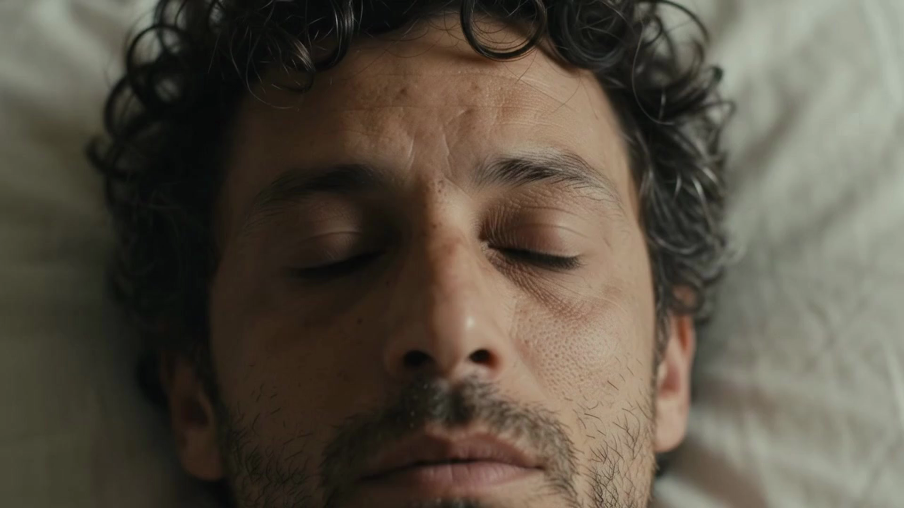
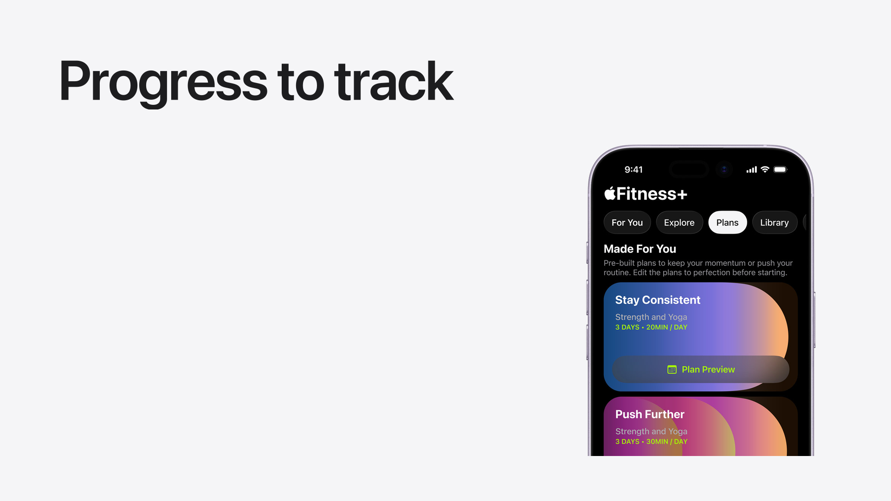
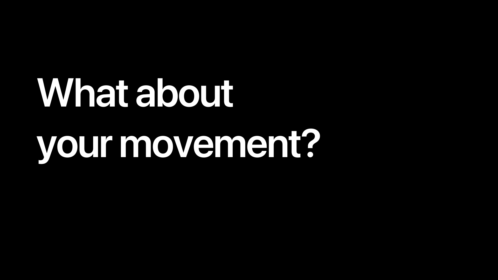
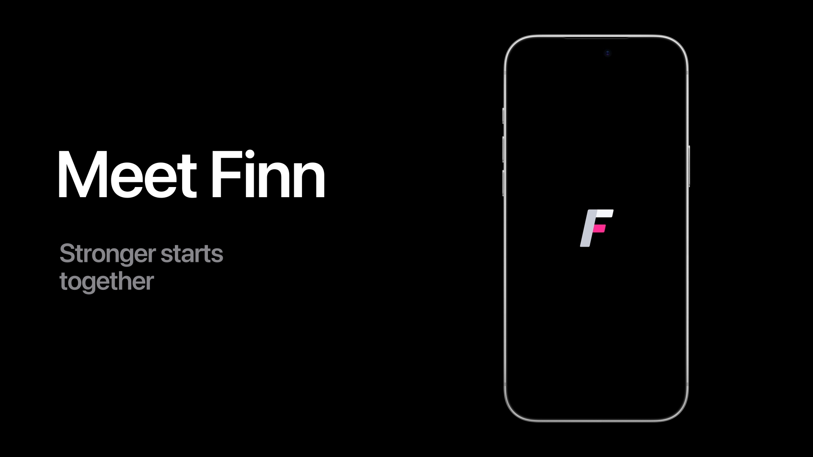
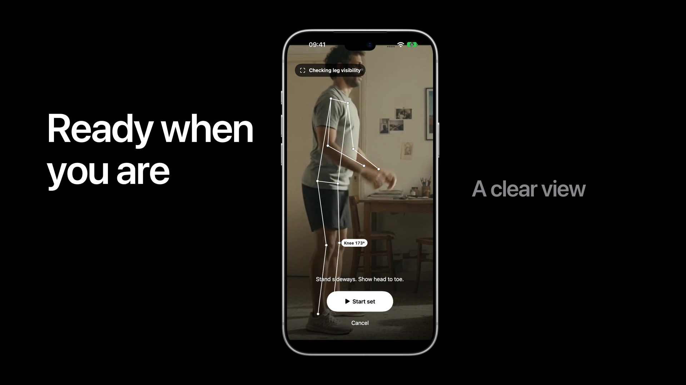
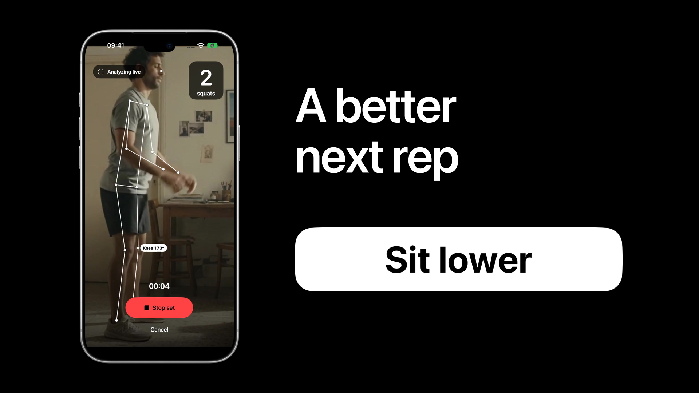
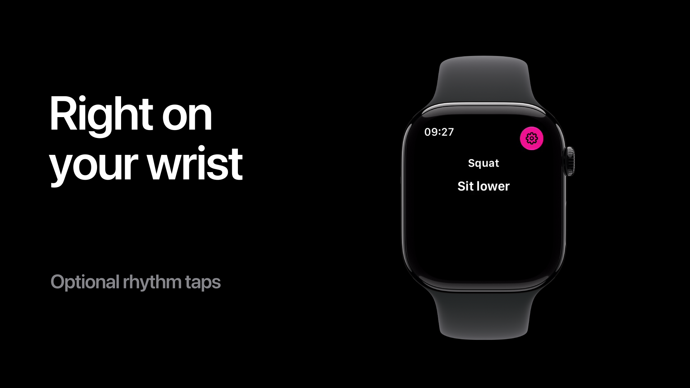
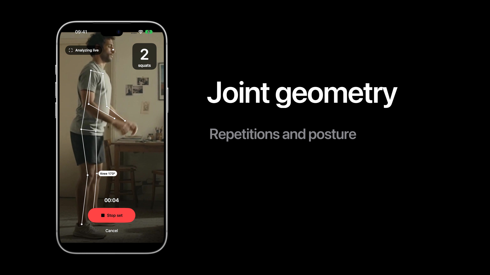
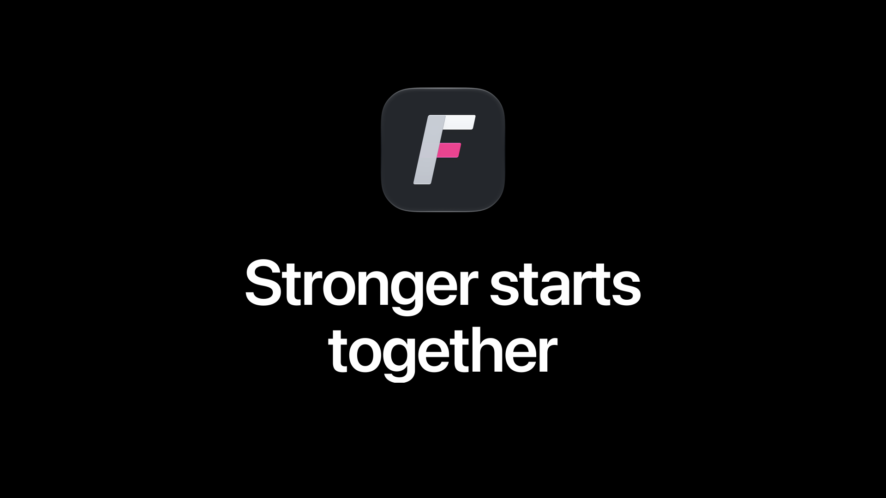

Finn.
Five minutes.
10 scenes · one-minute opening film · four-minute spoken presentation
Rehearse · Keynote ·
Five-minute playback backup
01 · 0:00–1:00
Make room

0:00–1:00. Opening film. Let the soundtrack lead. Do not speak over it. The camera-preview and
coaching sequence is a scripted product demonstration, not a validation study of the generated actor.
The Finn reminder is a proposed notification experience, composited for this film. Continuous source
video replaces simulator playback. Vision landmark positions are interpolated for visual smoothness in
this scripted product demonstration.
02 · 1:00–1:30
Workouts to follow. Progress to track.

1:00–1:30. Fitness apps have made getting started easier. Apple Fitness+ offers guided workouts.
Workout and logging apps help us keep track of what we do. But following a class and recording a set
do not, by themselves, tell us how our own movement changed. Camera form coaches already exist,
including Tempo. Our focus is bringing a clear movement-feedback loop to an iPhone and Apple Watch.
Sources:
https://www.apple.com/apple-fitness-plus/ ; https://www.hevyapp.com/ ;
https://support.tempo.fit/support/solutions/articles/151000154714-3d-tempo-vision-form-feedback
03 · 1:30–1:45
What about your movement?

1:30–1:45. When you train alone, who sees the rep you cannot see? That is the problem Finn takes on. A
view of your own movement, and one useful adjustment for the next set.
04 · 1:45–2:05
Meet Finn

1:45–2:05. Meet Finn. A second perspective on the way you move. Set down your iPhone, choose an
exercise, and start a set. Finn is still in implementation. This walkthrough shows the current
experience with scripted example coaching.
05 · 2:05–2:30
Ready when you are

2:05–2:30. Start with the exercise you want to work on. Finn helps you find the right camera view. For
this squat, that means standing sideways with your whole body visible. Once the camera can see the
joints it needs, start the set and focus on the movement. [Advance to begin the set.]
06 · 2:30–3:05
A better next rep

2:30–3:05. Your iPhone follows the body landmarks and counts your reps. But the useful moment is the
adjustment. [Let the cue enlarge at 6 seconds.] Sit lower. A short cue, connected to the movement in
front of the camera. The next rep becomes a chance to use that guidance. Afterward, a compact review
keeps the observation with your set. This cue is a scripted product demonstration, not a measured
finding about the actor.
07 · 3:05–3:35
On your wrist. In your progress.

3:05–3:35. The same cue comes to your Apple Watch, while your iPhone performs the camera analysis.
WatchConnectivity keeps the set and short guidance in sync. [At 20 seconds, Progress.] Your saved sets
build a history. Here the latest best set is eleven reps. Project looks ahead from that history. It is
an estimate, not a promise. These are illustrative workouts in the current native app, not a
participant study.
08 · 3:35–4:00
Foundation Models
3:35–4:00. The coach uses Foundation Models, Apple’s Swift framework for Apple Intelligence. It
receives saved set facts and returns structured set references, which Finn validates. The standard
build uses the on-device model. If Apple Intelligence is unavailable, saved observations still work.
This model supports the conversation; it does not invent the movement measurements.
Source:
https://developer.apple.com/foundation-models-framework/
09 · 4:00–4:40
How Finn sees movement

4:00–4:40. [0–12 seconds: Vision.] AVFoundation supplies camera frames. Apple’s pretrained Vision
model finds the body landmarks on your device. We do not train that model ourselves. [12–25 seconds:
Joint geometry.] Finn tracks the selected athlete and uses joint angles over time to count repetitions
and apply exercise-specific posture rules. No custom trained classifier ships in this build. [26–40
seconds: Confidence.] A measurement has to pass visibility and confidence checks before it can support
advice. If the camera cannot see enough, Finn should ask for a better view instead of guessing.
Sources:
Finn/Capture/PoseFrameAnalyzer.swift; Finn/Workout/FormChecks.swift;
tools/exercise-classifier/README.md;
https://developer.apple.com/documentation/vision/vndetecthumanbodyposerequest
10 · 4:40–5:00
Stronger starts together

4:40–5:00. A second perspective. A useful adjustment. Guidance on your wrist. That is Finn. Our next
step is validating the experience with real people, real movement and real devices. We want every set
to leave you with something useful for the next one. Stronger starts together.
Presentation notes
Begin with the film. Total timing is five minutes, including one minute of film and approximately 500
spoken words. Pause and advance manually if rehearsal needs more time. Keynote’s embedded movies
preserve choreography, typography, sound and device footage; the rendered motion is not individually
editable as native Keynote builds.
Assets: official Apple bezels, SF Pro, Foundation Models icon and Fitness+ imagery, plus Finn’s own
app artwork and UI. Previously generated human film plates remain. The form cue is scripted; matching
Vision landmarks come from the generated footage. Do not describe the film as evidence of real-world
detection accuracy. Camera form-coaching competitors exist; the talk does not claim market
exclusivity.